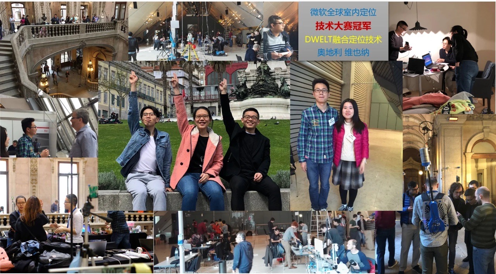

01
复杂环境下的高精定位感知
面向卫星不可用、遮挡严重与强干扰环境，提升定位导航与环境感知的精度和连续可用性。
高精定位 · 连续导航 · 多源感知
面向地下、隧道、低空及空天地一体等复杂与极限环境，构建高精感知、可靠连接与可信协同能力。
面向卫星不可用、遮挡严重与强干扰环境，提升定位导航与环境感知的精度和连续可用性。
面向地下管网、隧道与地下空间，研究高精探测、智能检测与复杂环境理解。
面向地下、煤矿、水下、冰层等特殊介质，提升复杂传播条件下的信息连接能力。
面向资源受限和低信任分布式环境，提升信息处理效率、系统可信性与多节点协同能力。



创刊主编单位，建设开放获取的国际区块链期刊。
会议主席单位，连接前沿科研、产业界与国际学术合作。
中国区领导单位，推动中国及亚太地区区块链技术社区建设。